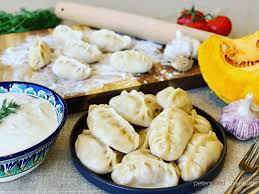

Manti Recipe

Description
Manti is a dish of Uzbek cuisine that has the form of large dumplings filled with meat and steamed in a special pot. Manti is a true ‘nomad’: it first came to Central Asia from China, and then its various versions spread to Russia and other European countries.
Ingredients
- Flour
- Lamb or Beef
- Onions
- Spices
Steps
- Knead simple dough (flour, water and salt) and leave it for some time under a cover.
- Cut the meat into very small pieces, add onion also cut into tiny blocks, and mix them. Salt the mixture and add pepper and spices to your taste.
- Now is the time to mould the dumplings. There are two ways. The first one is to roll out the dough thinly and to cut it into squares 8 cm by 10 cm. The second way is to make several rolls, cut them into equal pieces and roll out each as thinly as possible.
- Then put the prepared mixture of meat and onion in the centre of the square or round, add a piece of butter or fat and join the ends. You had better see it with your own eyes, so difficult this technique is to explain.
- To steam manti you need a special pot (kaskan – multi-level metal steamer), which in European countries can be substituted by a steamer. Kaskan (manti pot) consists of layered pots with many holes.
- Before putting the steamer on fire, oil its plates. Place the grids with manti into the steamer over boiling water, cover it with a lid and cook for 40-45 minutes.
- Manti are usually served with sour cream (smetana) or tomato sauce, or fresh onion rings (sprinkled with vinegar and black pepper), herbs, salt, pepper and butter.